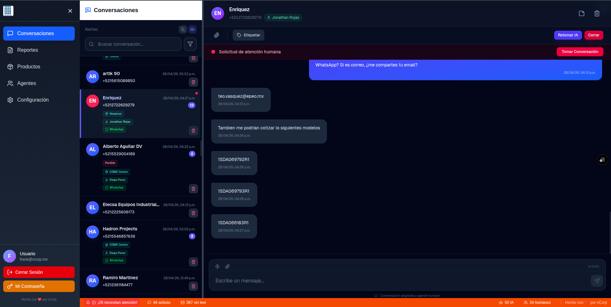

Pantalla principal del dashboard
Esta captura resume la vista que usa el agente durante su turno. Si luego reemplazas la imagen por una version acotada desde Gimp, este documento la mostrara automaticamente.

Referencia rapida para operacion diaria en el chat de ELECSA. Usa esta pantalla para capacitar agentes y explicar cada zona del dashboard.
Esta captura resume la vista que usa el agente durante su turno. Si luego reemplazas la imagen por una version acotada desde Gimp, este documento la mostrara automaticamente.

Estas 12 cotas describen lo que el agente debe entender al mirar el dashboard.
Aquí navegas entre Conversaciones, Reportes, Productos, Agentes y Configuración. Para operación diaria, tu pantalla principal es Conversaciones.
Úsalo para localizar chats por nombre visible o número del cliente. Es la forma más rápida de recuperar una conversación específica.
Indica qué sucursal detectó el sistema para ese cliente. Revísalo antes de responder para confirmar que el chat corresponde a tu zona.
Muestra quién está atendiendo actualmente la conversación. Si ya hay responsable, evita responder duplicado sin coordinación.
Señala que el sistema también notificó esta conversación por WhatsApp a agentes de la sucursal correspondiente.
El número azul muestra mensajes pendientes de revisar. Prioriza primero los chats con alerta humana y luego los no leídos más recientes.
En el panel derecho revisas el historial completo. Antes de contestar, lee contexto, archivos adjuntos y mensajes previos de Sofía.
Usa etiquetas para clasificar la oportunidad: Nuevo, Interesado, Cotización, Seguimiento, Ganado, Perdido o Recurrente.
Devuelve el control a Sofía solo cuando la conversación vuelva a una consulta simple y ya no requiera atención humana directa.
Usa estos botones para reactivar un caso o cerrarlo cuando ya no haya pendiente. Al cerrar, la conversación sale de la lista activa.
Aquí escribes mensajes y adjuntas archivos. Responde con contexto, sin repetir preguntas que Sofía ya resolvió si hace falta.
Resume alertas activas, conversaciones abiertas, mensajes sin leer y distribución entre IA y humanos. Úsala como indicador rápido del turno.